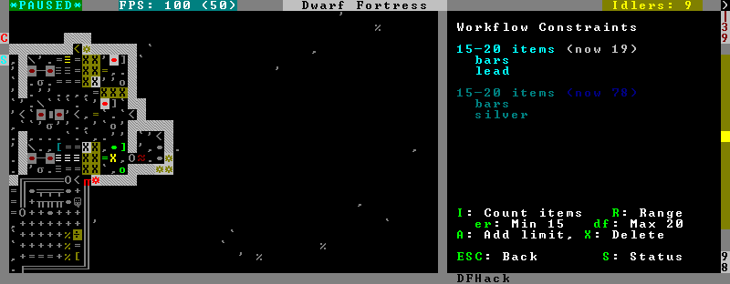
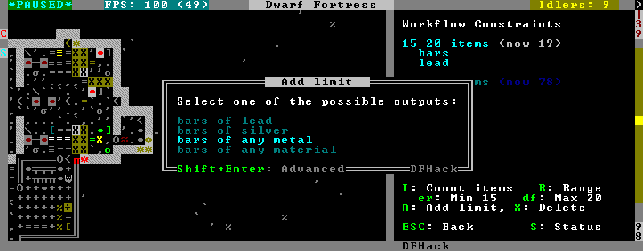
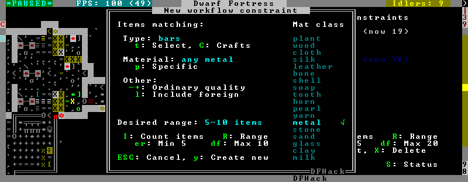
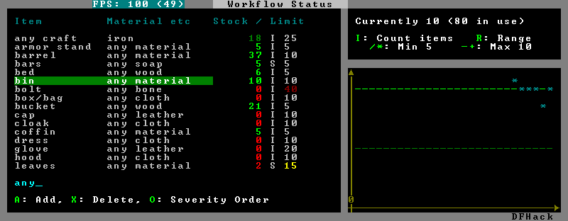

gui/workflow¶
This tool provides a simple interface to item production constraints managed by workflow. When a workshop job is selected in q mode and this tool is invoked, it displays the constraints applicable to the current job and their current status. It also allows you to modify existing constraints or add new ones.

A constraint is a target range to be compared against either the number of individual items or the number of item stacks. It also includes an item type and, optionally, a material. When the current stock count is below the lower bound of the range, the job is resumed; if it is above or equal to the top bound, it will be suspended. If there are multiple constraints, being out of the range of any constraint will cause the job to be suspended.
Pressing I switches the current constraint between counting stacks and counting individual items. Pressing R lets you input the range directly, or e, r, d, f incrementally adjusts the bounds.
Pressing A produces a list of possible outputs of this job as guessed by workflow, and lets you create a new constraint by choosing one as template. If you don’t see the choice you want in the list, it likely means you have to adjust the job material first using job item-material or gui/workshop-job, as described in the workflow documentation. In this manner, this feature can be used for troubleshooting jobs that don’t match the right constraints.

If you select one of the outputs with Enter, the matching constraint is simply added to the list. If you use ShiftEnter, the interface proceeds to the next dialog, which allows you to edit the suggested constraint parameters and set the item count range.

Pressing S (or by using the hotkey in the z stocks screen) opens the overall status screen where you can manage constraints for all jobs:

This screen shows all currently existing workflow constraints, and allows monitoring and/or changing them from one screen.
The color of the stock level number indicates how “healthy” the stock level is, based on current count and trend. Bright green is very good, green is good, red is bad, bright red is very bad.
The limit number is also color-coded. Red means that there are currently no workshops producing that item (i.e. no jobs). If it’s yellow, that means the production has been delayed, possibly due to lack of input materials.
The chart on the right is a plot of the last 14 days (28 half day plots) worth of stock history for the selected item, with the rightmost point representing the current stock value. The bright green dashed line is the target limit (maximum) and the dark green line is that minus the gap (minimum).
Usage¶
gui/workflowView and manage constraints for the currently selected workshop job.
gui/workflow statusView and manage constraints across all workflow managed jobs.